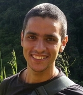

Cesar Parra
fou heureux

Mon expérience
Mes compétences
- Connaissance des bases de la programmation
- Initiation aux langages Python, Blockly, HTML, CSS et Wolfram Language
- Connaitre et utiliser la ligne de commande sous Windows (batch)
- Création de pages Web avec WIX
- Installer un OS (système d’explotation) Windows et Raspbian
- Créer des visuels avec Canva (cartes de visite et logos)
Ma formation
- Formation découverte des métiers numériques
CEFIM - Tours | février – mai 2019
- Apprenez à créer votre site web avec HTML5 et CSS3
openclassrooms.com | avril 2019
- Formation VISA trois en un
AFPP - Tours | novembre 2018 – février 2019
- Génie électrique
Université Centrale du Venezuela - niveau BTS | 1998 – 2006
- Cours d'autoprotection et de sécurité des citoyens
Defensa Civil Aragua - Venezuela | 1999
- Cap électricité et électronique analogique
Unité professionnel le d'enseignement technologique Venezuela | 1997
- BAC scientifique
Lycée San José - Guatire, Venezuela | 1997
{kind=link}